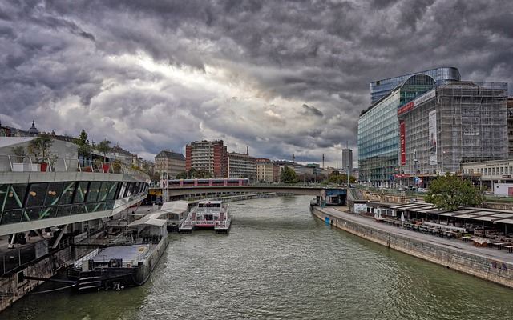
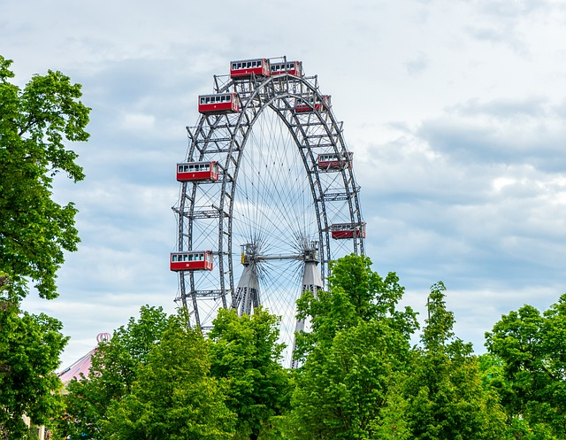
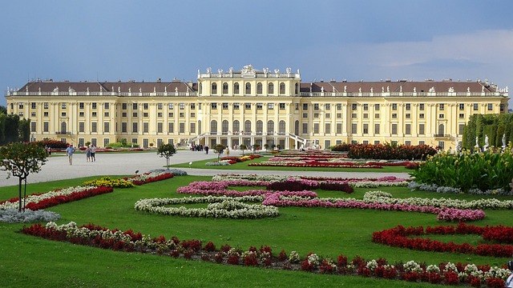
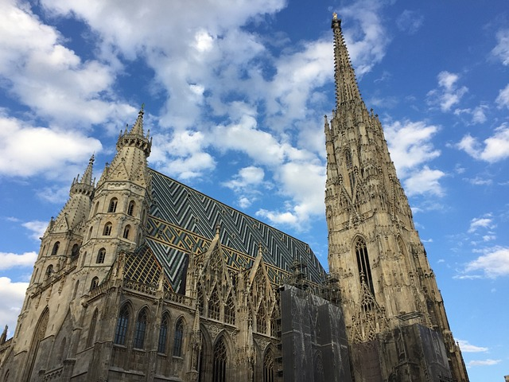

Opera house or theater is worlds leading opera houses as it is well known for the performances of Richard Wagner, Wolfgang Amadeus Mozart, and Richard Strauss.

The river Danube is the second longest European rivers and passes through Germany, Austria, Slovakia, Hungary, Croatia, Serbia, Bulgaria, Romania, Ukraine, and Moldova.

The Prater, a popular public park and one of the oldest amusement parks in the world.

Schloss Schoenbrunn, the most exquisite baroque of Europe.

Stephansdom, Viennas most recognisable symbol as the main cathedral of Vienna and one of the tallest churches in the world.